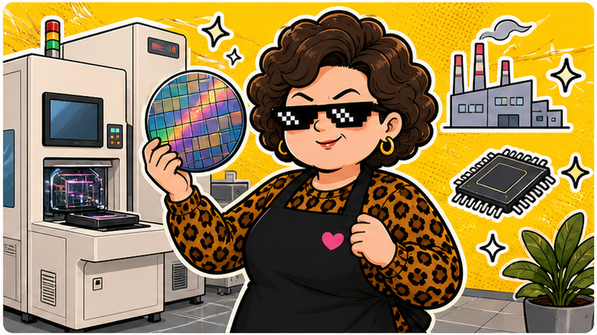

2303 聯電 · 2026/05/26
聯電不是神山，但成熟製程也有自己的脾氣。
5/26 收 130.50，漲 5.50，成交量 291,896,012 股。半導體不只有台積電，成熟製程也會被市場重新估價。
收盤價130.50
漲跌▲ +5.50
成交量2.92 億股
阿姨一句話：聯電像巷口開很久的老店，沒有天天放煙火，但景氣一變，大家又會想起它。
今天在演什麼
聯電主要看成熟製程需求，像車用、工控、消費電子相關訂單。當市場開始找台積電以外的半導體故事，聯電就容易被拿出來重新討論。
但成熟製程也不是躺著賺。報價、稼動率、客戶拉貨節奏都會影響獲利。阿姨會把它當成「半導體循環股」來看，不會只因為今天收紅就喊一路向上。
阿姨看點
- 看稼動率：機台有沒有忙起來，比新聞標題更有用。
- 看報價：成熟製程報價如果撐得住，故事才比較有底。
- 看估值：漲上來之後要問，市場是不是已經先付錢了。
⚠️ 阿姨的風險提醒（你一定要看）
📌 本站所有股票 ETF 內容僅供教育與資訊參考，不是投資建議，不保證任何收益。
📌 所有數字與範例皆為靜態展示資料，未串接即時市場數據，請勿以此做為買賣依據。
📌 任何投資都有風險，包括本金損失的可能。投資前請自行做功課、評估財務狀況，必要時諮詢專業顧問。
📌 阿姨碎念歸碎念，賺錢賠錢都是你自己的事。阿姨不幫你決定，只幫你補習。
資料來源：臺灣證券交易所 2303 日成交資訊